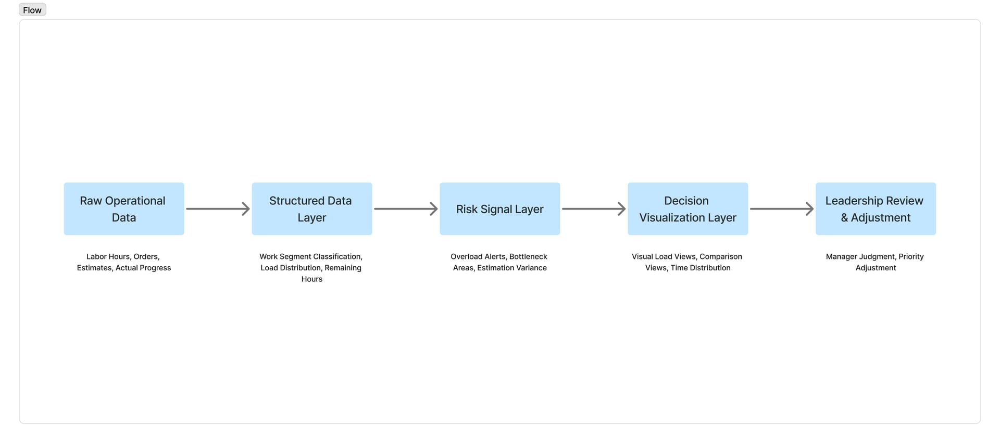
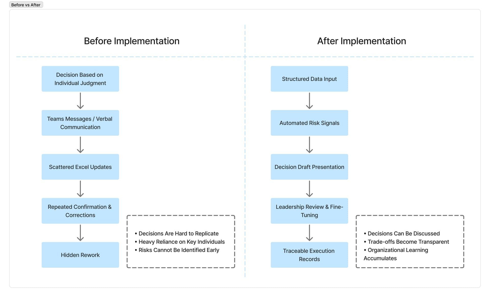

Decision-Centered Capacity Planning System
以決策為核心的產能規劃系統
Reframing Capacity as a Decision Risk Problem

During several weekly leadership meetings, I noticed a pattern.
When scheduling conflicts appeared, everyone would turn to the same senior manager.
He would quickly scan a few numbers, pause for a few seconds, and say:
“Do this first. Delay that one.”
The decisions were usually fast, and usually correct. But no one could clearly explain the reasoning behind them.
That was the moment I realized something important.
Capacity planning may look like an efficiency problem on the surface. In reality, it is a structural dependency risk.
Critical production decisions were concentrated in the experience and intuition of a small number of individuals.
This creates three long-term risks:
- Decisions are difficult to replicate
- Trade-offs lack visible justification
- The organization cannot accumulate or transfer decision knowledge
The real issue is not scheduling speed.
It is decision transparency and continuity.
Phase 1 — Behavior Discovery Before Architecture
At first, I considered building a full scheduling engine immediately.
However, during early discussions about system adoption, I realized a more fundamental issue:
If I did not yet understand which numbers leadership truly trusted, even a well-designed system would become just another report.
So I intentionally paused the system rewrite. Instead, I used an existing third-party SaaS project management tool and temporarily migrated part of the company’s workflow into it.
The goal was not digital transformation. The goal was observation.
I wanted to understand:
- Which metrics actually influenced leadership decisions
- What information users trusted — and what they ignored
- Where resistance to structured constraints appeared
- What had been tried before, and why it did not sustain
During this phase, I prioritized learning and validation over building a complete architecture.
The system needed to embed into existing workflows, not force behavior change.
Phase 2 — Externalizing Implicit Decision Logic
As behavior patterns became clearer, I began converting operational data into visible decision references.
This included:
- Estimated vs. actual labor hours
- Segment-level workload imbalance
- Capacity overflow signals
- How management interpreted structured data
There was one meeting when a project delay was questioned. For the first time, instead of answering from memory, we opened a workload distribution view and discussed the actual numbers.
It was a small shift.
But from that point on, discussions began to center around shared data rather than personal recollection.
Reasoning that previously existed only in a few individuals’ minds became reviewable, comparable, and discussable.
The system gradually evolved from a reporting tool into a decision-support foundation for weekly leadership meetings.

Phase 3 — Custom Interface After Constraint Validation
Only after multiple rounds of real usage — and after confirming actual workflow bottlenecks and information blind spots — did I begin developing a custom automation system.
This ensured the architecture was built on validated behavior, not hypothetical requirements.
Design was no longer a list of features. It became a response to real decision friction.
Design Philosophy
This is not a scheduling tool.
It is designed as a structured environment that improves decision quality under fixed capacity constraints.
The value of the system is not in how many operations it automates, but in making trade-offs visible.
AI helped accelerate prototyping and iteration. However, long-term value comes from clarity in decision architecture and maturity in constraint design.
Leave a Comment
留言
Share your thoughts about this project
分享您對此專案的想法